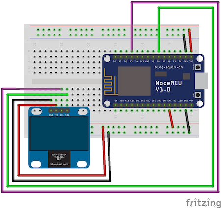
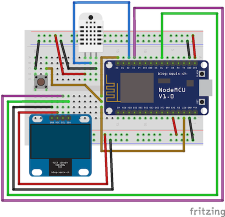
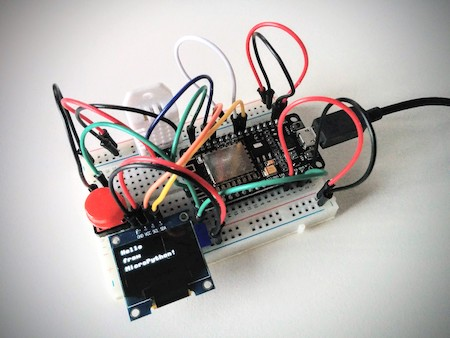
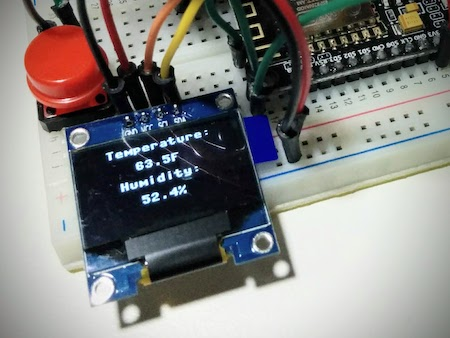
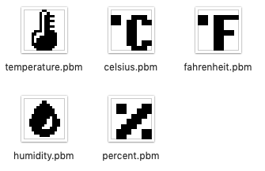
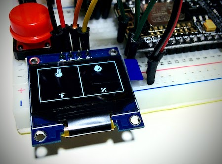
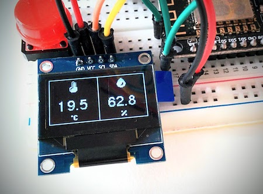
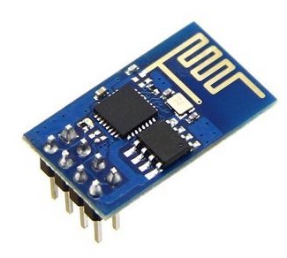

MicroPython and the Internet of Things, Part VI: Working with a Screen
Posted by
on underIn this chapter your microcontroller gets an important upgrade with the addition of a screen!
If you want to see me and hear me explain everything in this tutorial, I encourage you to purchase the video version from my Courses site. Not only it will make for a better learning experience, but you'll also be supporting my effort in keeping my blog updated with relevant content. Thank you!
For your reference, here is the complete list of chapters in this tutorial:
- Chapter 1: Welcome
- Chapter 2: Hello, MicroPython!
- Chapter 3: Building a MicroPython Application
- Chapter 4: Wi-Fi and the Cloud
- Chapter 5: Temperature and Humidity
- Chapter 6: Working with a Screen (this article)
The SSD1306 OLED Screen
The SSD1306 is a very popular low cost screen that can be easily connected to most microcontrollers. As with most components, there are many variants of these screens including monochrome and color models of different sizes and form factors.
For this tutorial, I recommended the 128x64 monochrome display, because it is fairly cheap and small enough to fit in a breadboard along with other components.
In addition to the visible differences among the many models, these screens can be divided in two large groups based on the communication protocol that they implement, which can be either SPI or I2C. These two protocols are standard ways of communication between devices that are used not only in screens but in a lot of other components. MicroPython includes support classes for both protocols in its standard library.
If your screen has four connection pins, then it uses the I2C protocol, which needs two data wires plus voltage and ground. If you see more than four pins, then your screen supports the SPI protocol, but very likely also supports I2C as an option. For this tutorial I have decided to use the I2C protocol, simply because it requires less data pins. If you've got one of the SPI models with more than four pins, check the documentation of your screen to learn how to configure it to use I2C, and which four pins you should use.
Besides the familiar VCC and GND pins, devices that implement the I2C protocol use two data lines called SDA or "Serial Data" and SCL or "Serial Clock". These need to be connected to two data pins on the microcontroller. Below you can see a breadboard diagram showing the wiring of the screen:

Here is another diagram that shows the screen integrated with the other components as in the previous chapter:

The order of the four pins in my screen is GND, VCC, SCL and SDA. Read the labels on your screen to make sure the order is the same and adjust the connections appropriately if it is not. I've seen some screens that have the order of GND and VCC reversed.
I installed the screen in the bottom-left corner of the breadboard, being very careful that the four pins land on columns that are unused in between the button and the microcontroller board. The button uses the first and third columns of holes on the left side, so I aligned the left-most pin of the screen in the fourth column counting from the left. I connected the screen's GND and VCC pins to holes in the bottom power strips. Then I connected SCL to D3, and SDA to D6. The choice of D pins to use is, as before, somewhat random. I just picked two pins that I haven't used for anything so far.
Controlling the Screen from MicroPython
Let's give the new screen a try using the MicroPython REPL. The first step is to create an object that represents the I2C connection to the screen:
>>> import machine
>>> i2c = machine.I2C(scl=machine.Pin(0), sda=machine.Pin(12))
As you see, this is all done with the machine package. The machine.I2C class includes the support to communicate with the screen using the I2C protocol. The two arguments that this object needs are the pins that are connected to the SCL and SDA terminals. As always this is done with GPIO numbers. For my choice of pins, D3 is GPIO0 and D6 is GPIO12, so the pins are instantiated as 0 and 12 respectively.
The I2C protocol supports multiple devices connected on the same data pins, and there is a mechanism to "discover" connected devices. If your screen is correctly connected, you can now check if it is detected using the scan() function:
>>> i2c.scan()
[60]
This function returns a list of device IDs that were recognized. This model of screen comes preconfigured with an id of 60, so when you see [60] as output you know your screen is working. If i2c.scan() returns [] (an empty list), then that means that it was not recognized. You need to check your connections and make sure all the wires are nicely seated in the breadboard holes.
When the screen is recognized, you can instantiate an object to control it. Since these screens are so common, MicroPython also includes a class for them:
>>> import ssd1306
>>> display = ssd1306.SSD1306_I2C(128, 64, i2c)
The arguments to the ssd1306.SSD1306() class are the screen width and height in pixels, and the i2c instance created previously. This object provides a good number of drawing primitives that you can use. Of particular interest are the fill() method which can be used to clear the screen, the text() method that can be used to write characters, and the show() method which updates the screen after making changes. Here is an example:
>>> display.fill(0)
>>> display.text('Hello', 0, 0)
>>> display.text('from', 0, 16)
>>> display.text('MicroPython!', 0, 32)
>>> display.show()
The fill() call clears the screen, or more accurately, sets all pixels in the screen to color 0, which is black. The text() calls write some text. The arguments are the text to write, and then the X and Y coordinates where the text should start. The X argument refers to the horizontal position. A value of 0 means the left border, and a value of 127 means the right border. The Y argument is the vertical position and it goes from 0 for the top of the screen to 63 for the bottom.
When you were entering these statements, you surely noticed that nothing shows on the screen until you issue the display.show() call at the end. The reason is that the SSD1306() driver uses buffering. When you draw or write text to the screen those changes are temporarily written to a memory image of the screen. Once you are done with your changes a call to show() sends the data from the memory buffer to the device over the I2C connection.
After running the above code, your device should like mine, shown below:

Obviously I don't expect you to identify the individual connections anymore, there are too many cables for a picture to be a clear representation, but it should give you an idea of what you'll have if you haven't built your project yet.
Displaying Temperature and Humidity on the Screen
I hope you agree that the next logical step is to write an application that displays the temperature and the humidity on the screen. But before I forget and to keep things organized, I'm going to create a new subdirectory called chapter6 inside micropython-tutorial to hold the project files for this chapter:
(venv) $ mkdir chapter6
(venv) $ cd chapter6
After experimenting in the REPL to decide on the best way to format the temperature and humidity values, I wrote this function to encapsulate the control of the screen:
import machine
import ssd1306
def display_temperature_and_humidity(temperature, humidity):
i2c = machine.I2C(scl=machine.Pin(config.DISPLAY_SCL_PIN),
sda=machine.Pin(config.DISPLAY_SDA_PIN))
if 60 not in i2c.scan():
raise RuntimeError('Cannot find display.')
display = ssd1306.SSD1306_I2C(128, 64, i2c)
display.fill(0)
display.text('{:^16s}'.format('Temperature:'), 0, 0)
display.text('{:^16s}'.format(str(temperature) + \
('F' if config.FAHRENHEIT else 'C')), 0, 16)
display.text('{:^16s}'.format('Humidity:'), 0, 32)
display.text('{:^16s}'.format(str(humidity) + '%'), 0, 48)
display.show()
time.sleep(10)
display.poweroff()
A lot of what you see in this function should be familiar to you, but there are a few new things. The screen is initialized as you saw in the previous section. I'm making sure that the ID 60 is present when I scan the I2C bus and if I don't find it then I raise a RuntimeError, since it is obvious that the screen is not going to work. The exception is going to be handled in the run() function I'm yet to write, and I'll just blink the LED as I did in previous applications.
You may find the syntax inside the the display.text() calls strange. I'm using the format() function of string objects, which has some not very known options to center text. The '{:^16s}' string means that I want to show the string given as an argument centered in a field of 16 characters. I used this formatting for the four lines that I'm displaying.
Since I have four lines of text and 64 vertical pixels, I'm assigning 16 pixels for each line. This is why you see the Y coordinate on these four lines set to 0, 16, 32, and 48 respectively.
Since the temperatures can be displayed in the Celsius or Fahrenheit scales, I've also added a little bit of logic to display a C or an F after the number depending on the selected scale. I did this using an inline conditional, which has the format 'F' if config.FAHRENHEIT else 'C'. This type of expression is great to express simple decisions in a concise manner.
After I call show() to make the text visible, I sleep for 10 seconds, and then use display.poweroff() to turn the display off. The idea here is that the temperature and humidity data will be visible during those 10 seconds, and then the device will go back to sleep.
If you are wondering how this looks, here is a closeup of the screen while showing my temperature and humidity:

The rest of the code can be assembled from parts of the previous chapter's application including the support for reading the temperature and humidity from the sensor, going into deep sleep and using a blinking light to report unexpected errors. Here is the complete code for your reference:
import dht
import machine
import ssd1306
import sys
import time
import config
def show_error():
led = machine.Pin(config.LED_PIN, machine.Pin.OUT)
for i in range(3):
led.on()
time.sleep(0.5)
led.off()
time.sleep(0.5)
led.on()
def is_debug():
debug = machine.Pin(config.DEBUG_PIN, machine.Pin.IN, machine.Pin.PULL_UP)
if debug.value() == 0:
print('Debug mode detected.')
return True
return False
def get_temperature_and_humidity():
dht22 = dht.DHT22(machine.Pin(config.DHT22_PIN))
dht22.measure()
temperature = dht22.temperature()
if config.FAHRENHEIT:
temperature = temperature * 9 / 5 + 32
return temperature, dht22.humidity()
def display_temperature_and_humidity(temperature, humidity):
i2c = machine.I2C(scl=machine.Pin(config.DISPLAY_SCL_PIN),
sda=machine.Pin(config.DISPLAY_SDA_PIN))
if 60 not in i2c.scan():
raise RuntimeError('Cannot find display.')
display = ssd1306.SSD1306_I2C(128, 64, i2c)
display.fill(0)
display.text('{:^16s}'.format('Temperature:'), 0, 0)
display.text('{:^16s}'.format(str(temperature) + \
('F' if config.FAHRENHEIT else 'C')), 0, 16)
display.text('{:^16s}'.format('Humidity:'), 0, 32)
display.text('{:^16s}'.format(str(humidity) + '%'), 0, 48)
display.show()
time.sleep(10)
display.poweroff()
def run():
try:
temperature, humidity = get_temperature_and_humidity()
print('Temperature = {temperature}, Humidity = {humidity}'.format(
temperature=temperature, humidity=humidity))
display_temperature_and_humidity(temperature, humidity)
except Exception as exc:
sys.print_exception(exc)
show_error()
if not is_debug():
machine.deepsleep()
run()
The configuration values needed for this application are in this config.py:
LED_PIN = 2 # D4
DEBUG_PIN = 14 # D5
DHT22_PIN = 4 # D2
DISPLAY_SCL_PIN = 0 # D3
DISPLAY_SDA_PIN = 12 # D6
FAHRENHEIT = True
Activating the application when the button is pressed also works as in the previous chapter, with the external reset button wired to connect RST to GND when pressed, triggering a reset of the board, even while it is in a deep sleep state. You can see in the breadboard wiring diagram above that I left the wiring from D0 to RST that I used to trigger a wake-up alarm. That is not used by this application, but leaving the wires in place does not affect it at all, and it would only be a problem if I wanted to use pin D0 for another purpose, such as bringing back the second LED.
I also left the is_debug() function, which I have used on several examples to configure the board to optionally not go into deep sleep, so that it is easier to connect to it and open a REPL session. To enable the debug option you need to connect a jumper wire between the D5 pin and GND.
Using Drawing Primitives
While it is nice that MicroPython makes it easy to print text on the SSD1306 screen, I'm sure you agree with me that just showing white text on a black screen is a little boring. In this section I want to show you some of the drawing primitives provided by the SSD1306 driver that can be used to complement text.
Let's start another REPL session. Remember that you will likely need to add the debugging jumper wire to your circuit to prevent the board from going to sleep. In case you don't remember, here are the instructions to create a screen object and clear the screen:
>>> import machine
>>> i2c = machine.I2C(scl=machine.Pin(0), sda=machine.Pin(12))
>>> i2c.scan()
[60]
>>> import ssd1306
>>> display = ssd1306.SSD1306_I2C(128, 64, i2c)
>>> display.fill(0)
One of the drawing primitives is the rect() function, which as I'm sure you can guess, draws a rectangle:
>>> display.rect(0, 0, 128, 64, 1)
>>> display.show()
The arguments to display.rect() are the left and top coordinates, the width and height, and the color of the rectangle, using 1 for white and 0 for black. The above example draws a rectangle around the entire surface of the screen. A variant of rect() is fill_rect() which takes the same arguments but draws a solid rectangle instead of the outline.
Another drawing primitive is line():
>>> display.line(64, 0, 64, 64, 1)
>>> display.show()
The arguments to line() are the coordinates of the two ends of the line and the color. Each line end is given as two values, the X and Y coordinates. In the example above I'm drawing a vertical line through the middle of the screen, which is X=64 for a screen of 128 pixels wide. There are two line drawing variants, vline() and hline() which are specialized cases for vertical or horizontal lines.
While maybe a little less useful, there is also a pixel() method which can be used to set an individual pixel by passing the X and Y location and the color:
>>> display.pixel(5, 10, 1)
>>> display.show()
This function can be used to remove a pixel from the screen when passing 0 as the color:
>>> display.pixel(5, 10, 0)
>>> display.show()
If you only pass the X and Y coordinates to the pixel() function without include a pixel color, then the function returns the current color of that pixel:
>>> display.pixel(0, 0)
1
>>> display.pixel(5, 10)
0
Drawing Images
Even though by any standard this is a very limited display, there is always an opportunity to enhance the appearance of your application with images or icons, as little as they will need to be to fit!
MicroPython doesn't offer any support for loading images from files, but it supports an operation known as bit blit, which is short for bit block transfer. The bit blit operation is a common algorithm to copy an image stored in a memory buffer onto another, possibly larger memory buffer, such as the one used by the SSD1306 driver.
So the big problem that needs to be solved to be able to display images on the screen is to figure out a way to load them into a memory buffer. Once that is done, the blit() method provided by the screen object will display it.
The memory buffers used by MicroPython are objects created from class framebuf.FrameBuffer. Let's take a look at how these objects are created:
class framebuf.FrameBuffer(buffer, width, height, format, stride=width)
The buffer argument is where the binary data for the image is stored. Since the images are going to be black and white, each pixel uses one bit of information. Since this is a binary representation, each byte in this buffer will store the state of eight pixels. In most cases this is going to be an instance of the Python's bytearray class.
The width and height arguments specify the size of the image in pixels. Since each byte in the buffer stores eight pixels, a lot of things are simplified with the restriction that images need to have a width that is a multiple of 8, because that means that a row of pixels from the image fits into an exact number of bytes, so this is the case where the stride argument is equal to width. This is a restriction I'm totally fine with.
The format specifies how the pixels are stored in the memory buffer. The documentation lists the following list of values for this argument:
framebuf.MONO_VLSB: Monochrome (1-bit) color format This defines a mapping where the bits in a byte are vertically mapped with bit 0 being nearest the top of the screen. Consequently each byte occupies 8 vertical pixels. Subsequent bytes appear at successive horizontal locations until the rightmost edge is reached. Further bytes are rendered at locations starting at the leftmost edge, 8 pixels lower.framebuf.MONO_HLSB: Monochrome (1-bit) color format This defines a mapping where the bits in a byte are horizontally mapped. Each byte occupies 8 horizontal pixels with bit 0 being the leftmost. Subsequent bytes appear at successive horizontal locations until the rightmost edge is reached. Further bytes are rendered on the next row, one pixel lower.framebuf.MONO_HMSB: Monochrome (1-bit) color format This defines a mapping where the bits in a byte are horizontally mapped. Each byte occupies 8 horizontal pixels with bit 7 being the leftmost. Subsequent bytes appear at successive horizontal locations until the rightmost edge is reached. Further bytes are rendered on the next row, one pixel lower.framebuf.RGB565: Red Green Blue (16-bit, 5+6+5) color formatframebuf.GS2_HMSB: Grayscale (2-bit) color formatframebuf.GS4_HMSB: Grayscale (4-bit) color formatframebuf.GS8: Grayscale (8-bit) color format
Since the screen is black and white only the monochrome options make sense, so have to pick a format from the first three options. I'm not going to go into a lot of detail on what the differences are, so I'll just say that the second option, framebuf.MONO_HLSB, is the one that I selected because after looking at a few image formats I found one that uses this exact format.
The image format that is a close match to this structure is the binary variant of the Portable Bitmap format. You can use the free Gimp image editor if you are interested in creating your own images in this format.
Below you can see a few black & white icons that I drew with Gimp:

One interesting detail is that in the PBM format black pixels are written as a 1, and white pixels as a 0. This is exactly the reverse of what MicroPython's screen object does, so I drew my icons in black on a white background. The black pixels in these icons are going to render as white on the screen, and viceversa.
The structure of a binary PBM file is as follows:
P4
# Description
<width> <height>
<binary image data>
The first line has an identifier for the format. The P4 type indicates that this is a binary PBM file. The second line is just a description of the image. The third line contains the dimensions in pixels, and then after that the file includes the binary data with the definition of all the pixels.
To read this image into a FrameBuffer object, I need to open the .pbm file, skip the first two lines, read the width and height from the third line, and then read the rest of the file as a bytearray object. Once I have everything loaded I can create the FrameBuffer object. I wrote a little function that does this:
import framebuf
def load_image(filename):
with open(filename, 'rb') as f:
f.readline()
f.readline()
width, height = [int(v) for v in f.readline().split()]
data = bytearray(f.read())
return framebuf.FrameBuffer(data, width, height, framebuf.MONO_HLSB)
The open() function works like in standard Python. Here I'm opening the file using the with ... as ... syntax, which is known as a context manager. With this construct the object that represents the file is assigned to the f variable inside the block of code under the with statement. When this block ends the file is automatically closed.
Inside the with block I skip the first two lines in the file by calling readline() and ignoring the return value. On the third line I parse the width and the height. This requires a few steps, so to help you understand what I've done I'm going to decompose that line into all those steps:
f.readline().split()reads the line from the file, and then creates a list of substrings by splitting the line at each space. Since this line has the format<width> <height>the split has the effect of creating a list with the format['<width>', '<height>']. For example, if this line is8 16, the result of this is['8', '16'].- The problem is that the numbers are parsed as strings by the
split()call, but I need them as integers. To convert them, I use a list comprehension, which basically applies a transformation to every element in the list. For the['8', '16']example, the resulting list is[8, 16], which is exactly what I want. - Since having these two numbers in a list is a bit inconvenient, I break the list into the two elements using a tuple assignment. So continuing with the example,
width, height = [8, 16]would assignwidth = 8andheight = 16.
At this point I'm done reading the header data, so the rest of the file is the binary packed pixels. By calling f.read() I get the rest of the file starting from the current file position. Since the FrameBuffer class requires this data to be in a bytearray object, I transform it on the fly with the bytearray(f.read()) expression.
The last line in the function creates the FrameBuffer object passing the data, width and height values plus the MONO_HLSB format. The stride parameter is not included because for the images I'm going to work with it is going to be the same as the image width.
The procedure to draw an image on the screen is then as follows:
image = load_image('filename.pbm')
display.blit(image, x, y)
The blit() method of the screen object takes the frame buffer with the image data as first argument, and then the X and Y coordinates where the image should be drawn.
Here you can see a practical application of this image drawing technique. I'm going to rewrite the display_temperature_and_percentage() function to render a much nicer screen. Below you can see a first attempt that includes some nice borders and the images:
def display_temperature_and_humidity(temperature, humidity):
i2c = machine.I2C(scl=machine.Pin(config.DISPLAY_SCL_PIN),
sda=machine.Pin(config.DISPLAY_SDA_PIN))
if 60 not in i2c.scan():
raise RuntimeError('Cannot find display.')
display = ssd1306.SSD1306_I2C(128, 64, i2c)
temperature_pbm = load_image('temperature.pbm')
units_pbm = load_image('fahrenheit.pbm') if config.FAHRENHEIT \
else load_image('celsius.pbm')
humidity_pbm = load_image('humidity.pbm')
percent_pbm = load_image('percent.pbm')
display.fill(0)
display.rect(0, 0, 128, 64, 1)
display.line(64, 0, 64, 64, 1)
display.blit(temperature_pbm, 24, 4)
display.blit(humidity_pbm, 88, 4)
display.blit(units_pbm, 28, 52)
display.blit(percent_pbm, 92, 52)
display.show()
time.sleep(10)
display.poweroff()
This is not a complete function, I'm still missing the actual temperature and humidity values, which I'm going to show you how to render in a custom font in the next section. But for now, this is how the new screen design looks:

Much nicer, right? If you are wondering how I aligned the images neatly on the screen, the answer is simple: trail and error. The temperature.pbm and humidity.pbm are 16x16 pixels, and the other images are 8x8. Knowing their sizes and the dimensions of the screen (128x64) makes it easy to calculate where the images should go to be centered, or left/right aligned, so I spent some time in the REPL trying out different designs until I arrived at this layout which I quite like. You can probably guess that I'm saving the space in the middle for the numbers.
If you want to test this code with my images, here are download links for them:
You have to copy them to your microcontroller board along with the updated main.py after you replace the old display_temperature_and_humidity() function with the new code and add the load_image() function defined above.
Custom Fonts
The text rendering function in the SSD1306 class is fairly basic. One of the more limiting aspects is that it does not support custom fonts, there is only one font that is hardcoded into the function. Unfortunately for a lot of purposes that font is too small and unreadable unless you have very good vision. To end this chapter I wanted to show you how to render text using custom fonts.
The idea that I had was to treat a custom font as a collection of images. Writing text in a custom font then is simple, all you need to do is call the blit() method of the display once per character and moving the X position to the right each time. The only complication is in generating the images for each character in the chosen font.
And it turns out that somebody has already done this and released the code as open source. A search on GitHub led me to the micropython-font-to-py repository by Peter Hinch. In this repository, where you can find:
- A
font_to_py.pyscript that converts a font from your computer into a format suitable to use by MicroPython. This runs on your computer and generates a.pyfile with all the font data inside. - Several font renderer classes for MicroPython that use the font files generated by the
font_to_py.pyscript. - A few example font files, ready to be used.
- Documentation that explains the font format.
The freesans20.py font file from Peter's repository seemed like the perfect size for my needs. The "20" in the name is the height of the characters in pixels. That is about the size of the space I have in my screen to add the numbers.
From the font rendering options in Peter's repository, I settled on his simplest version, which he called writer_minimal.py. I renamed writer_minimal.py to writer.py in my project and also made a few minor changes to it.
You can download the font and the render code below:
The way font rendering with this code works is as follows:
# import the font and the writer code
import freesans20
import writer
# create a writer instance
font_writer = writer.Writer(display, freesans20)
# set writing position
font_writer.set_textpos(0, 0)
# write some text!
font_writer.printstring("hello")
# calculate how many pixels wide a text is
len = font_writer.stringlen("hello")
If you are wondering what is the point of the last function, that is necessary if you want to center or right align some text. With the default font this is easy because all characters have an 8x8 size, but these custom fonts are not proportionally spaced, so for example the number "1" uses less horizontal space than the number "3". The only way to know how many pixels a string of text will take on the screen is to use this function to calculate it, and then once you know that number you can calculate where the text needs to be displayed to appear centered or right-aligned.
Here is the snippet of code that renders the temperature and humidity values in the correct place:
text = '{:.1f}'.format(temperature)
textlen = font_writer.stringlen(text)
font_writer.set_textpos((64 - textlen) // 2, 30)
font_writer.printstring(text)
text = '{:.1f}'.format(humidity)
textlen = font_writer.stringlen(text)
font_writer.set_textpos(64 + (64 - textlen) // 2, 30)
font_writer.printstring(text)
I first convert the numbers into strings, because this Writer class that I'm using only knows how to print strings. To do this conversion I use the format() method of the string object once again. The {:.1f} format specifier requests that the number is rendered with no more than one decimal. If the number has more decimals, then it will be rounded to one in the string version.
Next I use the textlen() method to get the width in pixels of the string. This is so that I can center these numbers in their areas.
Based on experimentation in the REPL, I decided that the Y coordinate for these numbers is going to be Y=30. This font has 20 pixels of height, so I will be using the screen rows 30 to 50 for this text. If you look in the image rendering code above, the degrees and percent images are displayed starting at Y=52.
The temperature needs to be centered in the left side box, which has 64 characters wide. To center it, I take 64 and substract the width in pixels of the string. This is going to be the amount of white space to the left and to the right of the string, so I divide it by two and that leaves me with the number of pixels on the left that need to be skipped. Note that I used the // to divide here, because I want the result to be an integer. I can then set the text rendering position to this number on X, and 30 on Y. For the humidity the calculation is similar, but I need to add 64 pixels because the left border of the humidity box starts at X=64.
Once the text position is set, I call the printstring() method to render the text. Below you can see the complete, now final version of main.py:
import dht
import framebuf
import machine
import ssd1306
import sys
import time
import config
import freesans20
import writer
def show_error():
led = machine.Pin(config.LED_PIN, machine.Pin.OUT)
for i in range(3):
led.on()
time.sleep(0.5)
led.off()
time.sleep(0.5)
led.on()
def is_debug():
debug = machine.Pin(config.DEBUG_PIN, machine.Pin.IN, machine.Pin.PULL_UP)
if debug.value() == 0:
print('Debug mode detected.')
return True
return False
def get_temperature_and_humidity():
dht22 = dht.DHT22(machine.Pin(config.DHT22_PIN))
dht22.measure()
temperature = dht22.temperature()
if config.FAHRENHEIT:
temperature = temperature * 9 / 5 + 32
return temperature, dht22.humidity()
def load_image(filename):
with open(filename, 'rb') as f:
f.readline()
f.readline()
width, height = [int(v) for v in f.readline().split()]
data = bytearray(f.read())
return framebuf.FrameBuffer(data, width, height, framebuf.MONO_HLSB)
def display_temperature_and_humidity(temperature, humidity):
i2c = machine.I2C(scl=machine.Pin(config.DISPLAY_SCL_PIN),
sda=machine.Pin(config.DISPLAY_SDA_PIN))
if 60 not in i2c.scan():
raise RuntimeError('Cannot find display.')
display = ssd1306.SSD1306_I2C(128, 64, i2c)
font_writer = writer.Writer(display, freesans20)
temperature_pbm = load_image('temperature.pbm')
units_pbm = load_image('fahrenheit.pbm') if config.FAHRENHEIT \
else load_image('celsius.pbm')
humidity_pbm = load_image('humidity.pbm')
percent_pbm = load_image('percent.pbm')
display.fill(0)
display.rect(0, 0, 128, 64, 1)
display.line(64, 0, 64, 64, 1)
display.blit(temperature_pbm, 24, 4)
display.blit(humidity_pbm, 88, 4)
display.blit(units_pbm, 28, 52)
display.blit(percent_pbm, 92, 52)
text = '{:.1f}'.format(temperature)
textlen = font_writer.stringlen(text)
font_writer.set_textpos((64 - textlen) // 2, 30)
font_writer.printstring(text)
text = '{:.1f}'.format(humidity)
textlen = font_writer.stringlen(text)
font_writer.set_textpos(64 + (64 - textlen) // 2, 30)
font_writer.printstring(text)
display.show()
time.sleep(10)
display.poweroff()
def run():
try:
temperature, humidity = get_temperature_and_humidity()
print('Temperature = {temperature}, Humidity = {humidity}'.format(
temperature=temperature, humidity=humidity))
display_temperature_and_humidity(temperature, humidity)
except Exception as exc:
sys.print_exception(exc)
show_error()
if not is_debug():
machine.deepsleep()
run()
To try this application you need to upload main.py, config.py, freesans20.py and writer.py to your board, along with the five .pbm images. Here is an example of how the screen looks with this final version of the application:

The End
With this example you have reached the end of my MicroPython tutorial. Congratulations!
Before I go, I wanted to leave a few thoughts on continuing on your MicroPython learning adventure, as there are a few areas I haven't touched in this tutorial that you may want to research.
Building Custom MicroPython firmwares
In this tutorial I have used a stock build of MicroPython from https://micropython.org. This is a convenient approach that works well for most projects. One disadvantage of the stock build is that it does not allow the inclusion of "frozen" Python code.
Consider that your .py files need to be read by the MicroPython interpreter running inside the board and compiled into the internal representation that the interpreter uses to run the code, and this identical process is repeated every time the application runs. An optimization would be to compile the code in your computer and then upload the compiled (or frozen) version to the board. This saves the microcontroller from having to compile your files every time.
For small projects the compilation step is small so it isn't a problem, but if you are working with a larger application you may find that the MicroPython interpreter runs out of memory before it can compile all your code. So in this case working with frozen modules is the only solution.
Freezing modules is a process that occurs as part of building the MicroPython firmware. The frozen modules are incorporated into the firmware in their final compiled format. The library packages that I have showed you in this tutorial such as urequests are stored in their frozen format in the stock firmware to save space and compilation time.
The MicroPython documentation is lacking in terms of describing the build process and how to configure modules to be frozen. I have learned how to do this by reading lots of forum posts and GitHub projects from other developers, and then I have created a GitHub project if my own that attempts to simplify the task of building the firmware specifically for the ESP8266 microcontroller: https://github.com/miguelgrinberg/micropython-esp8266-vagrant.
Installing Packages from PyPI
The Python package repository (or PyPI) accepts packages for MicroPython. The MicroPython interpreter ships with upip, a simpler version of the pip installer that can be used from inside the MicroPython REPL, provided that you connect your board to your Internet router. I have decided to not discuss upip in this tutorial for two reasons:
- Running
upipin your board works only when installing small packages. If you try to install something that is moderately complex thenupipwill run out of memory. This is related to the issues with compiling large source files in the microcontroller board that I discussed above. Theupiptool performs a source install, which is inefficient due to the compile step requirement. - Some of the packages available on PyPI for MicroPython are incompatible with current releases of MicroPython. This is an unfortunate side effect of disagreements between the creator of MicroPython and one of its core developers who now left the project. Many of the MicroPython libraries on PyPI are currently controlled by this developer and not by the official project.
The approach that I have taken when I needed to install a third party package is to copy the source files into my project manually, a practice generally known as vendoring the dependencies. You saw me do this with the custom font rendering code in this chapter.
Implementing a Web Server
An interesting project to build with MicroPython is a web server. This could be used for configuring your device, for example. You would connect to the IP address used by your microcontroller's Wi-Fi interface with your browser from your computer and interact with the board through a website. I have decided to not cover writing a web server with MicroPython simply because there is currently a lack of web development tools for this platform.
If you are wondering if standard Python microframeworks such as Bottle or Flask can work, the answer is no, because as odd as it sounds, these frameworks are too big to fit in the restricted environment of a microcontroller.
I have started my own MicroPython web framework modeled after Flask called microdot that I hope will address this hole in the ecosystem. Feel free to give it a try!
Using Other Microcontroller Boards
There are a few other boards that are currently supported by MicroPython, and the list is likely to grow over time. I chose the ESP8266 because of its low cost and popularity, but you should definitely look at other boards if the ESP8266 is too small (or too big!) for your needs.
You also have other options within the ESP8266 family. The ESP-12E model that I used in this tutorial is the high-level version which includes the micro-USB port for powering and programming. Often this is thought of as a prototyping board because of how easy it is to work with it. But once you have your application built on this board, you may consider building a production version using one of the more basic models, such as the also popular ESP-01:

Note that you will need to learn how to solder to work with this board!
Using MicroPython Derivatives
Most successful open source projects have "forks", and MicroPython is no exception. If you find that MicroPython is limiting you in some way, you may want to see if there is a derived project that works better for you. In particular, I would like to mention CircuitPython as worthy of your attention. The folks at Adafruit have done a fantastic job in creating and maintaining their fork, along with lots of additional device drivers.
Learning Electronics and Digital Circuits
I took a software centric approach when I designed this tutorial. If you want to create more complex projects, you may want to invest some time in learning electronics and digital circuit concepts. I have found the Electrical Engineering videos from Kahn Academy very good to learn the basics.
Running MicroPython on your Computer
There are builds of MicroPython that can run on Windows, Mac and Linux computers, so as long as you don't need to interact with the hardware, such as the machine, network, dht or ssd1306 modules, you can write MicroPython code and run it on your computer. For some of my projects I have created emulated versions of some of these hardware specific modules, and this allows me to work on my applications directly on my computer without having to constantly upload my source code to the ESP8266 board.
Become a Patron!
Hello, and thank you for visiting my blog! If you enjoyed this article, please consider supporting my work on this blog on Patreon!

-
#1 Janio LIma said
Perfect end... thanks!
I did all classes on the blog and everthing works well and I bought the e-book version this week just to keep everthing on hands to consultation and as a way to thanks for this tutorial.
-
#2 mpopoma said
Awesome :-)
-
#3 Brian Hambleton said
"Since these screens are so common, MicroPython also includes a class for them:"
I am running:
MicroPython v1.11-580-g973f68780 on 2019-11-18; ESP module with ESP8266.
I am not finding this to be the case.
(I have one d/l from adafruit but it doesn't have the draw rectangle method you describe.)
Where can I get the class library you are using?
Thanks,
Brian H.
-
#4 Miguel Grinberg said
@Brian: you seem to be using daily builds. Have you tried the official 1.11 release? In any case, the source file for the display driver is in the micropython git repo, here is the link to it: https://github.com/micropython/micropython/blob/master/drivers/display/ssd1306.py
-
#5 Luca said
thank you, I think it is the best guide I have read on micropython and OLED display.
are you planning to do something for the st7789 display too?
I am using https://github.com/devbis/st7789_mpy but I don't understand how to write text or import fonts. Do you believe that I can use the section with the title "Custom Fonts" also for the st7789 display? even if I don't know how to set the color.
every suggestion is precious -
#6 Miguel Grinberg said
@Luca: haven't used those screens, but you should be able to adapt the custom font code to work on any screen. You just need to change the method by which pixels are drawn.
-
#7 Josh Burnett said
Very well done! I was able to follow along with the entire tutorial, and then modify the code for my own purposes. I'm now logging temperature & humidity to the AdafruitIO service. Truly amazing what you can do with only 120 lines of code.
Thank you so much for this great tutorial.
-
#8 Kieran Bathgate said
I just read through and followed along each of the sections of this tutorial. To anyone that has completed this, roughly how long did it take?
Just trying to get an idea...
Kieran
-
#9 Diego said
Thanks for the post!
I spent several days trying to change the default font size in the old display until I found your tutorial. The explanation is great.
Diego. -
#10 David Kempton said
Hello Miguel. This is a brilliant lesson! However sadly I have encountered two problems. Firstly I could not get the pbm graphics to display correctly when I tried to use your code on a new RPi Pico board. Rectangles and line are fine. I think that the display. blit function is the culprit. I fear that it doesn't work properly on the Pico.
-
#11 Miguel Grinberg said
@David: I have not tested this code on the Pico yet, but I've got one already, so I'll review everything and make any necessary fixes.
-
#12 Casey said
Wow. Best all around tutorial on the entire web! Well put together, well thought out and well received. I like how the end result was a real world solution to a real world problem and the "components" or "functions" could easily be swapped out to suit ones own needs. I recently built a similar apparatus using the Arduino IDE and wanted to recreate the same thing using micropython. I looked everywhere for resources and that's just it, the resources were scattered everywhere. Your lesson brought it all together. Good job Miguel.
-
#13 Timo said
Thanks for the great tutorial. Is anyone else having problems with the main.py file? Im getting an ValueError on execution.
Traceback (most recent call last):
File "main.py", line 86, in run
File "main.py", line 57, in display_temperature_and_humidity
File "main.py", line 40, in load_image
ValueError: need more than 0 values to unpack -
#14 Miguel Grinberg said
@Timo: you don't seem to be using the exact same source code as I have, because line 40 of main.py is not part of the
load_imagefunction. I need to know exactly what code do you have in that line. -
#15 Timo said
@Miguel. Thx fpr your reply. Right now, im using the exact same code and line 40 is part of the load_image function:
width, height = [int(v) for v in f.readline().split()]
I tried a fix were i assigned the width and height by myself, but that doesnt worked at all.
-
#16 Miguel Grinberg said
@Timo: Are you loading a valid image encoded in pbm format? The load_image function can only understand pbm images, which have the width and height in the third line of the file. The error suggest that the third line of the file you are trying to load does not have this information.
-
#17 Timo said
@Miguel
The must have been an error in uploading the images. I uploaded them again, not it is working. Thank you for the hint and help. -
#18 Dustin said
Just had to say THANKS! I have been looking for a way to use images and fonts on my Pi Pico/SSD1306 and this worked well for me.